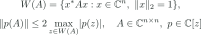
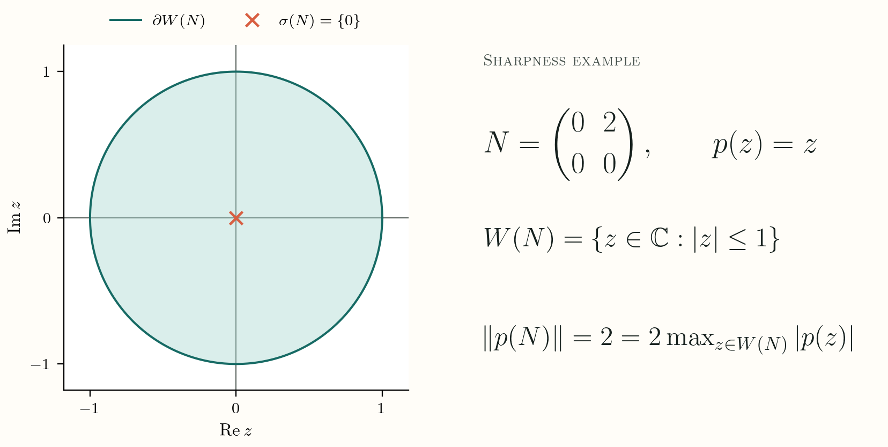

01 / Operator theory
Candidate proof · not peer reviewed
Crouzeix’s conjecture: a candidate proof
The manuscript proposes a proof that the numerical range is a 2-spectral set for every complex matrix. Peer review is pending. The repository also contains a pinned Lean 4 formalization of the matrix-polynomial statement and an axiom audit.
Statement proposed in the manuscript

- Artifact
- LaTeX manuscript
- Formalization
- Lean 4 sources and axiom audit
- Status
- Candidate proof · 2026
